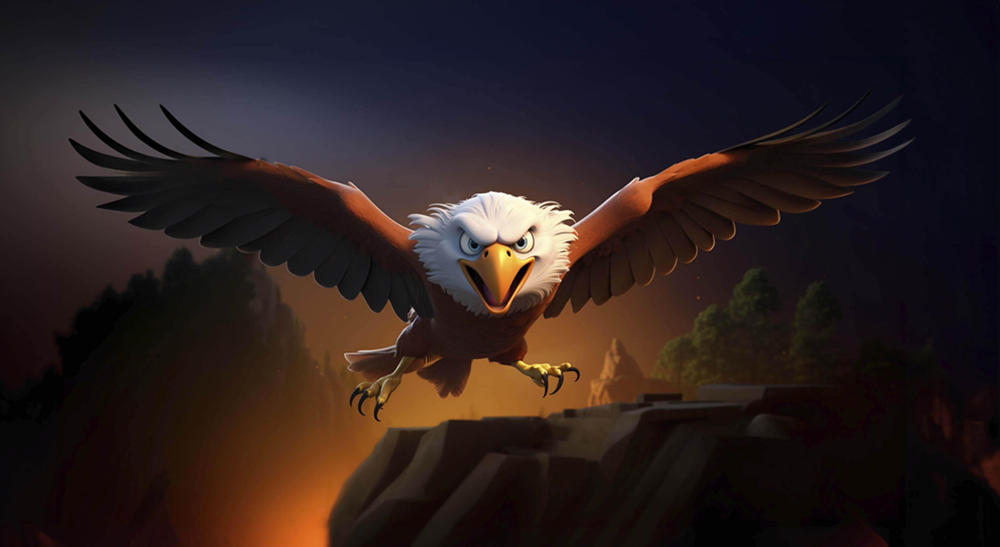

🦅 As Águias — Símbolos de Força e Liberdade
As águias são algumas das aves de rapina mais impressionantes da natureza. Conhecidas por sua força, agilidade e excelente visão, elas vivem em diferentes regiões do planeta e possuem características adaptadas para a caça. Uma das principais características das águias é sua visão extremamente desenvolvida, que permite localizar possíveis presas a grandes distâncias. Seus olhos voltados para a frente proporcionam uma boa visão binocular, ajudando-as a calcular distâncias durante o voo e a captura de suas presas.
As águias também possuem bicos fortes e curvos e garras afiadas, ferramentas fundamentais para capturar e manipular suas presas. Dependendo da espécie, sua alimentação pode incluir pequenos mamíferos, aves, répteis, peixes e outros animais. A águia-pescadora, por exemplo, é especializada na captura de peixes.
Lista de Links:

Outro aspecto fascinante é o voo. Muitas espécies conseguem aproveitar as correntes de ar para planar por longos períodos, economizando energia enquanto procuram alimento. O formato das asas varia de acordo com o ambiente e o estilo de voo de cada espécie..
Além de serem importantes predadoras, as águias fazem parte do equilíbrio dos ecossistemas. Sua presença na natureza representa a diversidade e a complexidade das relações entre os animais e o ambiente.
Por sua imponência e capacidade de voar grandes distâncias, a águia também se tornou um símbolo associado à liberdade, coragem, força e determinação em diferentes culturas.